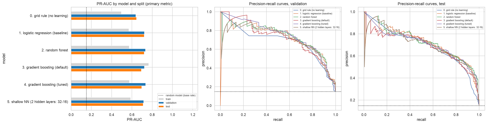
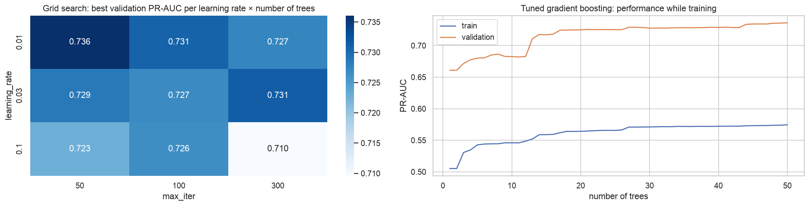
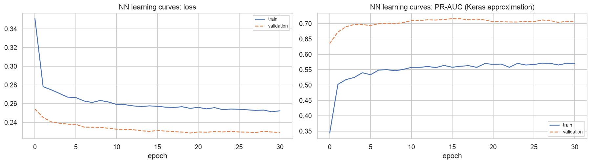
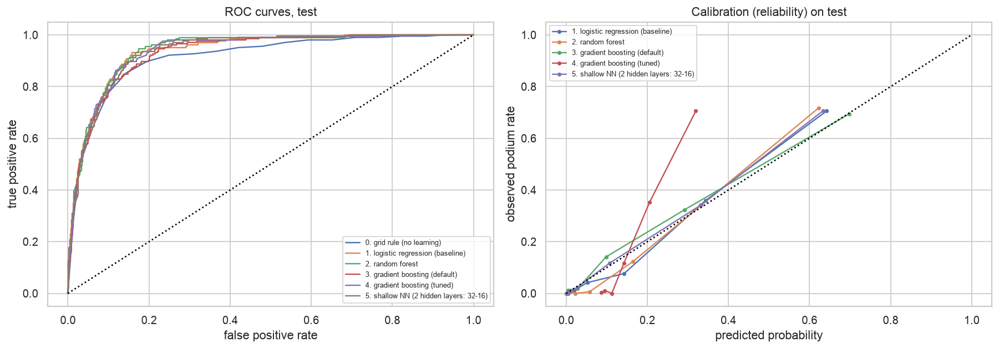
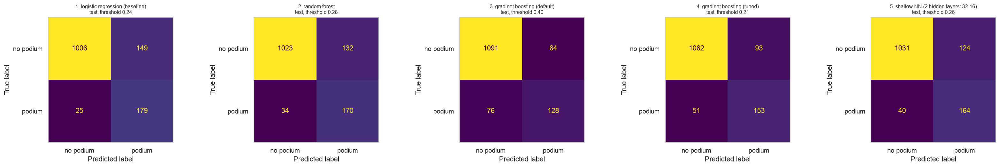

Every model predicts, for one driver on the grid of one race, the probability of finishing in the top three (positionOrder ≤ 3). It uses only information known after qualifying and before the start.
All models are trained and evaluated on the same modeling table: one row per driver per race, and the same 18 pre-race features in five groups (Section 3). Rows are split by season:
| split | seasons | races | rows | podium rate | used for |
|---|---|---|---|---|---|
| train | 1950–2019 | 1,007 | 22,576 | 13.4% | fitting the models and the preprocessing |
| validation | 2020–2021 | 39 | 780 | 15.0% | thresholds, hyperparameters, early stopping, model comparison |
| test | 2022–2024 | 68 | 1,359 | 15.0% | scored once per model; never used to choose anything |
Table 4.1 Splits. The base rate (≈ 0.15) is also the PR-AUC of a random model, so every PR-AUC below should be read against it.
Preprocessing (Section 3.5) is fitted on the training rows only: median imputation with 14 "was missing" indicators (32 inputs), plus StandardScaler for the logistic regression and the network.
| model | how it works | settings, and how they were chosen |
|---|---|---|
| 0. Grid rule reference, no learning | Score = 1 / grid slot. It shows how much the learned models add on top of starting position. | Validation threshold 0.333, exactly "podium if grid ≤ 3". |
| 1. Logistic regression baseline | A weighted sum of the scaled inputs turned into a probability by the sigmoid. Each weight is the change in log-odds per standard deviation of that input, with the others held fixed. | scikit-learn default C = 1, a mild L2 penalty; the baseline needs no tuning. |
| 2. Random forest | 400 trees, each on a bootstrap sample of rows, each split choosing from √32 ≈ 6 inputs. The probability is the average podium share of the leaves the row falls into. | Leaf size {5, 10, 20, 50, 100} chosen on validation → 100. Class weights were compared in the same grid but not used (D20). |
| 3. Gradient boosting (default) | Small trees added one after another; each fits the errors of the current model, with a learning rate. Inputs are binned into histograms. | scikit-learn defaults: learning rate 0.1, 100 trees, 31 leaves, minimum leaf 20. |
| 4. Gradient boosting (tuned) | The same algorithm. | A 54-point grid (learning rate × trees × leaves × minimum leaf) on validation. Chosen: learning rate 0.01, 50 trees, 7 leaves, minimum leaf 20. |
| 5. Shallow neural network | 32 inputs → 32 ReLU → 16 ReLU → 1 sigmoid (1,601 weights), Keras; Adam, binary cross-entropy, dropout 20% and L2 1e-4. | Early stopping on validation PR-AUC (patience 15, best epoch kept); 3 seeds (42, 1, 2). |
Table 4.2 The six modeling attempts, all on the same rows and features.
Early stopping is off for gradient boosting (D28). scikit-learn's default switches it on above 10,000 rows and holds out a random 10% of rows, which would mix drivers of the same race and make results depend on the seed. The number of trees is tuned on validation instead.
Class imbalance (D20). No model uses class weights. Weights make the rare class count more, but they push every predicted probability up, and the inference functions return a probability (van den Goorbergh et al., 2022). The forest grid shows weights do not help either: the best weighted forest scores 0.7310 on validation against 0.7334 unweighted.
| model | PR-AUC | 95% CI | ROC-AUC | F1 | precision | recall | Brier | threshold |
|---|---|---|---|---|---|---|---|---|
| 0. grid rule | 0.639 | 0.541–0.745 | 0.910 | 0.692 | 0.692 | 0.692 | 0.083 | 0.333 |
| 1. logistic regression | 0.723 | 0.612–0.836 | 0.932 | 0.699 | 0.613 | 0.812 | 0.067 | 0.241 |
| 2. random forest | 0.733 | 0.624–0.840 | 0.932 | 0.708 | 0.643 | 0.786 | 0.067 | 0.279 |
| 3. gradient boosting (default) | 0.724 | 0.627–0.820 | 0.924 | 0.693 | 0.702 | 0.684 | 0.070 | 0.398 |
| 4. gradient boosting (tuned) | 0.736 | 0.634–0.834 | 0.926 | 0.704 | 0.669 | 0.744 | 0.094 | 0.212 |
| 5. shallow NN (32–16) | 0.716 | 0.607–0.827 | 0.929 | 0.703 | 0.641 | 0.778 | 0.068 | 0.265 |
Table 4.3 Validation (2020–2021), 39 races, random-model PR-AUC 0.150. Shaded row: the recommended model (Section 4.5).
| model | PR-AUC | 95% CI | ROC-AUC | F1 | precision | recall | Brier | podiums / race |
|---|---|---|---|---|---|---|---|---|
| 0. grid rule | 0.645 | 0.590–0.708 | 0.913 | 0.647 | 0.647 | 0.647 | 0.081 | 3.00 |
| 1. logistic regression | 0.722 | 0.658–0.785 | 0.937 | 0.673 | 0.546 | 0.877 | 0.068 | 4.82 |
| 2. random forest | 0.722 | 0.664–0.779 | 0.940 | 0.672 | 0.563 | 0.833 | 0.069 | 4.44 |
| 3. gradient boosting (default) | 0.693 | 0.634–0.754 | 0.930 | 0.646 | 0.667 | 0.627 | 0.071 | 2.82 |
| 4. gradient boosting (tuned) | 0.696 | 0.635–0.759 | 0.936 | 0.680 | 0.622 | 0.750 | 0.096 | 3.62 |
| 5. shallow NN (32–16) | 0.711 | 0.651–0.769 | 0.937 | 0.667 | 0.569 | 0.804 | 0.070 | 4.24 |
Table 4.4 Unseen test seasons (2022–2024), 68 races. Each model uses its validation threshold.
| model (training seasons 1950–2019) | PR-AUC | ROC-AUC | F1 | Brier |
|---|---|---|---|---|
| 0. grid rule | 0.496 | 0.883 | 0.543 | 0.091 |
| 1. logistic regression | 0.570 | 0.900 | 0.582 | 0.078 |
| 2. random forest (out-of-bag) | 0.573 | 0.901 | 0.585 | 0.078 |
| 3. gradient boosting (default) | 0.765 | 0.959 | 0.686 | 0.058 |
| 4. gradient boosting (tuned) | 0.574 | 0.899 | 0.588 | 0.092 |
| 5. shallow NN (32–16) | 0.588 | 0.906 | 0.588 | 0.077 |
Table 4.5 Training seasons. The random forest's training score is its out-of-bag estimate; its in-sample score (0.599) is inflated by memorised rows.



| model | validation PR-AUC | 95% CI of difference vs baseline | better than baseline |
|---|---|---|---|
| 4. gradient boosting (tuned) | 0.7361 | −0.023 to +0.040 | no |
| 2. random forest (3-seed mean) | 0.7276 | −0.010 to +0.024 | no |
| 3. gradient boosting (default) | 0.7235 | −0.040 to +0.033 | no |
| 1. logistic regression (baseline) | 0.7226 | — | — |
| 5. shallow NN (3-seed mean) | 0.7190 | −0.043 to +0.024 | no |
Table 4.6 The comparison. Baseline − grid rule: 95% interval 0.031 to 0.144, entirely above 0.

